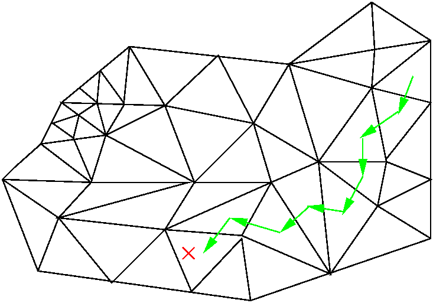
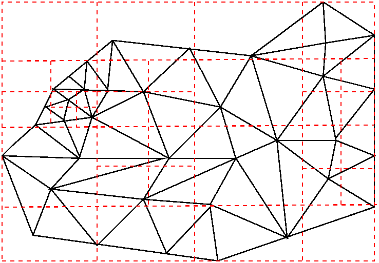

Point/Element Search Service
It is a common procedure to search a given mesh to determine the mesh entities that contain a set of points. Examples of this include synthetic diagnostics and field transfer during mesh adaptation. This can become a computationally expensive operation if the search procedure is not organized. The best search procedure depends on the organization and number of search points. Two point/element search algorithms have been developed.
The first is a line-search algorithm. It assumes that there are a ¡Èsmall¡É number of points being searched, that the points are ordered such that consecutive points are ¡Èclose¡É to each other, and that, other that maybe a very small number, all of the points are in the domain of the mesh. The algorithm requires no setup beyond loading the mesh. The algorithm is initiated by starting from the mesh region returned from the last successful mesh search (or a random mesh region if no previous successful searches have been performed). The algorithm proceeds by determining if the given point is in the domain of the mesh region and if it is, it returns the mesh region. If the point is outside the domain of the mesh region, the algorithm marks the mesh region as being searched and moves on to an adjacent mesh region that is closest to the search point and continues the search. If all adjacent mesh regions are marked then the search is continued with a random unmarked mesh region. The figure below shows an example of the line search algorithm in 2 dimensions.

Figure 1: An example of the line search algorithm for a 2D mesh.
The second search algorithm is an octree-based search algorithm. This algorithm recursively divides the domain of a mesh's bounding box into octants. The domain is subdivided locally such that the number of mesh regions associated with a leaf octant (an octant without any sub-octants) is bounded and balanced. A mesh region is considered to be associated with a leaf-octant if it is not determined that they do not intersect. Exact intersection between a mesh region's domain and a leaf octant is expensive to compute so approximate intersection is computed using a projection method to quickly eliminate candidates.
After all of the mesh regions are associated with the proper leaf octants, the setup is complete. Searching the mesh for a given point then involves determining which leaf octant the point is contained in and then searching the mesh regions associated with that leaf octant to determine if any of them contain the point in their domain. Figure 2 shows an octree division of the bounding box of a mesh.

Figure 2: An octree division of the bounding box of a 2D mesh.
Deciding which of these two algorithms to use depends on a variety of factors. Some of these factors include how many search points there are, the ordering of the search points, how many search points may be outside the domain of the mesh, the size of the mesh, etc. Both algorithms were tested with 2 meshes with M1 having 38,400 mesh regions and M2 having 557,568 mesh regions (both meshes are manifold and have all prismatic mesh regions). The setup time in seconds for each mesh and algorithm is shown in Table 1. Note that the mesh is created from nodal coordinates and element connectivity information.
|
|
M1 |
M2 |
|
Line Search Mesh Creation |
1.59 (s) |
22.7 (s) |
|
Octree-Based Search Mesh Creation |
0.34 (s) |
4.64 (s) |
|
Octree-Based Search Structure Creation |
3.66 (s) |
53.9 (s) |
Table 1: Computation time in seconds for creating objects.
For search efficiency, the two algorithms were compared for doing line searches. The results are given in Table 2.
|
|
Line Search |
Octree-Based Search |
|
M1 with 96 interior points out of 100 |
4.17 (s) |
0.0025 (s) |
|
M1 with 9,618 interior points out of 10,000 |
398 (s) |
0.929 (s) |
|
M1 with 100 interior points |
0.0163 (s) |
0.00645 (s) |
|
M1 with 10,000 interior points |
0.411 (s) |
0.0968 (s) |
|
M2 with 92 interior points out of 100 |
125 (s) |
0.00227 (s) |
|
M2 with 9,332 interior points out of 10,000 |
10.989 (s) |
0.0866 (s) |
|
M2 with 100 interior points |
0.0223 (s) |
0.00765 (s) |
|
M2 with 10,000 interior points |
0.412 (s) |
0.103 (s) |
Table 2: Compute times for line searches.
As can be seen from Table 2, the line search algorithm is only slightly slower than the octree-based search algorithm when all of the search points are in the domain of the mesh. Since the line search has very small set-up time, it is superior when points are ordered and no points are exterior. When any points are outside the domain, the line search quickly becomes expensive since in that case it ends-up checking all elements for such points. When there are large numbers of more random points to be searched, the octree method is faster.
Other search algorithms such as the popular ADT (or a pseudo ADT for
adapting meshes) can be implemented fairly quickly building on the
ITAPS infrastructure.
Tree Searching (MOAB)
MOAB provides a number of different tree structures for sorting (based on spatial decomposition) and searching on a mesh:
- Adaptive kd Tree: These trees partition space using alternating coordinate axis split planes. Split planes are chosen based on positions of vertices in the mesh.
- Binary Space Partition (BSP) Tree: These trees partition space using planar partitions which may or may not correspond to a coordinate plane.
- Hierarchical Oriented Bounding Box (hOBB) Tree: An Oriented Bounding Box encloses a collection of mesh entities and is oriented to minimize one or more box dimensions. A HOBB is a tree of OBBs, with the root of the tree surrounding all entities in a collection, and child boxes chosen to approximately bisect the collection along the longest principal axis of the parent box. HOBBs are an efficient choice when doing ray tracing on large collections of triangles, since they minimize the number of actual ray-triangle intersections that must be tested.
Interaction with geometric models
Much of the tree searching in MOAB was developed for the purpose of performing ray tracing or other searches on facets derived from geometric (CAD) models. If MOAB is configured with CGM support, then the facets and edges resolving CAD faces and edges are read into MOAB, with the geometric topology represented using MOAB entity sets (see MOAB documentation for details). MOAB tree structures can be constructed based on those facets, and searched using the closest point and ray tracing functions in the tree classes.Parallel tree evaluation
MOAB's kd Tree capability has been used to implement parallel solution transfer, where a vertex-based solution field is transferred from one mesh to another. An important part of this process is point location, where for every point in one mesh one finds the containing element, and processor that element is located on, in another mesh. MOAB implements this capability as part of its MBCoupler class. Solution transfer is described more fully here.